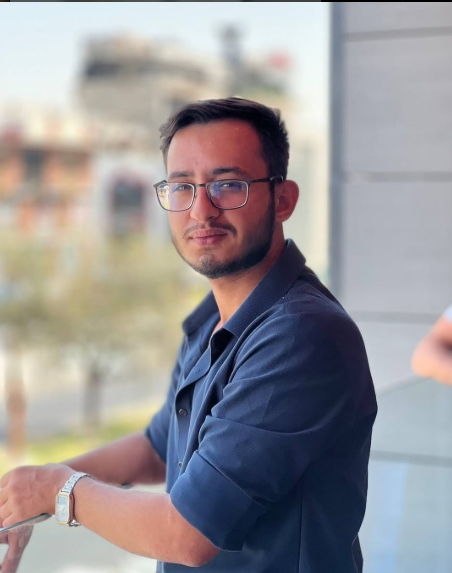

من أنا؟
أنا علي، شاعر وكاتب وطالب في كلية الإعلام / الجامعة المستنصرية. أحب التأمل، أعشق الكلمة، وأومن أن لكل نص حياة مستقلة تنبض بروح كاتبه. أكتب الشعر والنثر وأبحث دائمًا عن الجمال في التفاصيل الصغيرة.
"الجميع يفكر بتغيير العالم، ولكن لا أحد يفكر بتغيير نفسه."
― دوستويفسكي
"إذا غامرتَ في شرفٍ مرومِ... فلا تقنعْ بما دونَ النجومِ" ― المتنبي
مقاطع من شعري
لا تلمني أن وجتني في ممشاي متعثراً فحبُها كشرب الخمر أدمانُ
يا ويلَ قلبي من بلواهُ الحبُ داءً و المحبوبُ دواءً
رائحةُ القهوةِ تُسعدنُي فكيفَ لو أحتسيناها معاً
الشعوبُ المهانة تعيشُ في وهم المبادئ أما الحقيقة البحثُ عن رغيف الخبز
محطات من رحلتي
2014 - عرضتُ نفسي على الشاعر سعد رشيد شقيق الشاعر المرحوم جبار رشيد
2014 - أول محاولة كتابة شعرية بعنوان (الشفاء من الجرح)
2015 - حيازة الحزام الأسود في رياضة التايكونيجستو و السكي
2016 - الفوز في المرتبة الثانية في رياضة التايكونيجستو و السكي
2020 - الفوز بالمرتبة الأولى على العراق في رياضى التايكونيجستو و السكي
2021 - المشاركة بمسابقات الشعر الشعبي و الأدبي
2023 - المشاركة بمسابقة في مجلة الألكترونية (شباب حالم)
2025 - طالب كلية الأعلام في الجامعة المستنصرية
ما أؤمن به
- البساطة هي الجمال الحقيقي
- الهوية العراقية هي جذوري التي لا أتخلى عنها
- الكلمة الحرة هي صوت من لا صوت له
- الأدب جسر بين الثقافات والشعوب
- الإبداع يحتاج إلى الشجاعة قبل الموهبة
- القراءة هي أفضل استثمار للوقت
مهاراتي
- الشعر العربي الكلاسيكي والحديث
- العزف الموسيقي (عود)
- الكتابة الأدبية والنقدية
- إلقاء شعري حي
- الخطابة والتقديم الإعلامي
- لاعب فنون قتاية